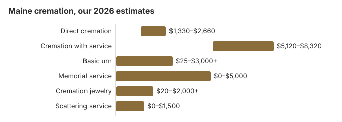

Cremation Costs in Maine (2026)
Three in four Maine families now choose cremation, 75% by the rate we use. On our estimates a direct cremation costs about $1,900, against about $6,400 for a funeral followed by cremation and $8,200 for the funeral home's part of a traditional burial. This page sets out those prices, Maine's 48-hour wait and medical examiner certificate, the permit from the town clerk, where ashes may be scattered, and the help a town can give through general assistance.
Kinds of Cremation in Maine
Direct Cremation
- The lowest-cost Maine option
- Cremation with no service first
- Moved directly to the crematory
- The ashes are returned to the family
- Any memorial can follow later
Cremation with Service
- A funeral, then the cremation
- Family may hold a visitation
- Held in a church or funeral home
- Usually includes a simple urn
- Closest to a traditional funeral
What Each Part of a Maine Cremation Costs
| Item | Maine estimate | Low to high |
|---|---|---|
| Direct cremation | $1,900 | $1,330 – $2,660 |
| Cremation with service | $6,400 | $5,120 – $8,320 |
| Basic urn | $50 – $300 | $25 – $3,000+ |
| Memorial service | $500 – $2,000 | $0 – $5,000 |
| Cremation jewelry | $50 – $500 | $20 – $2,000+ |
| Scattering service | $200 – $600 | $0 – $1,500 |
About the Maine figures: they are produced by our price model, not gathered from Maine crematories, so use them to test quotes rather than as a quote or professional advice. See our method for how we build them, and the disclaimer.
State sources: 22 M.R.S. § 4313; Maine GA Appendix H (10/1/26–9/30/27).

Before You Sign With a Maine Crematory
When considering cremation in Maine, keep these important points in mind:
- Maine's 32 M.R.S. §1405 requires that remains reach the crematory in a casket or suitable container, and the crematory must label that container with the person's name. Ask the provider which container its direct cremation price includes, and whether transport and an urn are covered.
- Under the FTC Funeral Rule (16 CFR 453.3(b)) a Maine provider offering direct cremation has to accept an unfinished wood box or another alternative container in place of a casket.
- Ask how long the Maine crematory usually takes to return the ashes once the permit is issued, and whether the quoted price includes delivery or only pickup.
Cremation Through a Maine Winter
Winter is a practical point in Maine. Some cemeteries do not open frozen ground until spring, but ashes can be kept and buried or scattered at any time, so a memorial need not wait on the weather. On our estimates cremation is also about $6,300 cheaper than a traditional burial in Maine.
Cremation Resources
- Funeral Consumers AllianceNonprofit advocacy: compare cremation providers
- Cremation Jewelry GuideMemorial keepsakes and remembrance options
- Cremation vs. Burial CostsSide-by-side cost comparison
- Pet Cremation CostsOptions and prices for pet cremation and memorials
- Final Expense InsuranceCoverage options to help pay for cremation costs
Compare Funeral Costs
- Average Funeral Cost in 2026National cost breakdown with real prices
- Cremation vs. Burial Cost ComparisonSide-by-side price comparison to help you decide
- Funeral Cost BreakdownEvery line item explained: know what you're paying for
- Cheapest Funeral OptionsLower-cost alternatives, with typical price ranges
- Direct Cremation: Most Affordable OptionNFDA 2023 median $2,645 with a family-supplied container (latest available)
- How to Compare Funeral PricesStep-by-step guide to getting the best price
Lowering the Cost of a Maine Cremation
Two ways a Maine family can spend less:
- Line up written prices. Get the General Price List from three Maine providers and compare the direct cremation figure on each.
- Ask when the ashes will be ready. With the 48-hour wait and the medical examiner's certificate, timing varies by provider, so ask for an expected date and whether any storage or refrigeration fee applies meanwhile.
Frequently Asked Questions
What does a Maine cremation cost?
On our estimates a Maine direct cremation costs about $1,900, and a full funeral service followed by cremation about $6,400.
Which cremation arrangements are available in Maine?
Maine families usually pick one of three: direct cremation at about $1,900, with no service; cremation first and a memorial later, wherever the family likes, costing somewhere between the two; or a full funeral with a viewing before cremation, at about $6,400.
What does Maine require before a cremation?
Maine bars cremation in the first 48 hours after death unless a contagious disease caused it, and a medical examiner must certify the death first (32 M.R.S. § 1405).
That section makes three documents the authority to cremate: the medical examiner's certificate, a certified copy of the death certificate and a burial transit permit. The examiner charges $25 for the certificate, a fee the Chief Medical Examiner can waive.
Complaints about how a Maine crematory or funeral home handled any of these steps go to the Board of Funeral Service (207-624-8624).
Where can ashes be scattered in Maine?
Yes. Under 13 M.R.S. § 1032, cremated remains may be scattered in an area of a cemetery, buried, or disposed of in any manner not contrary to law. On private land that means the owner's permission; for a state park or public reserved land, contact the Bureau of Parks and Lands before planning a ceremony.
Acadia National Park issues scattering permits under 36 CFR 2.62. For scattering in the Gulf of Maine, federal rules require a point at least three nautical miles from shore and a report to EPA Region 1 within 30 days.
Why do so many Maine families choose cremation?
At 75%, Maine is well above the 63.4% national rate NFDA projected for 2025. Cost is part of it: our estimate puts direct cremation about $6,300 below a traditional funeral in Maine.
How long does a cremation take in Maine?
The cremation takes 2 to 3 hours, but Maine's 48-hour wait after death (32 M.R.S. § 1405) comes first, along with the medical examiner's certificate, so even a direct cremation ($1,900) takes at least a few days.
Can a Maine family have a service before cremation?
Yes. In Maine a service with the body present and then cremation runs about $6,400 on this site's estimates, typically $5,120 to $8,320, against about $1,900 for direct cremation.
Maine bars cremation in the first 48 hours after death unless a contagious disease caused it, so a visitation and service usually fit before the cremation date. The medical examiner's certificate is required first (32 M.R.S. § 1405), and many Maine funeral homes offer a rental casket for the service.
More for Maine
How Maine's town clerk and crematory handle the paperwork
In Maine the disposition permit for a cremation comes from the State Registrar or the municipal clerk, either in the town where the death happened or in the town where the funeral home is. For cremation the clerk may issue it only after receiving the medical examiner's or medicolegal death investigator's certificate (22 M.R.S. § 2843; checked October 29, 2026).
- Kept for years: the crematory must keep that certificate for 15 years, which helps if a family question about the cremation comes up long afterward (32 M.R.S. § 1405).
- A container is required: remains cannot be taken to a crematory unless they are in a casket or other suitable container, and afterward the crematory must label the container of ashes with the person's name.
- Families acting alone: a crematory cannot refuse a cremation just because the family, as the authorized person, brings the documents rather than a funeral director.
Maine's board, town help and veterans cemeteries
The Maine Board of Funeral Service (207-624-8624) licenses crematories and funeral homes. Call it to check a provider's license or to make a complaint.
The Funeral Consumers Alliance does not count Maine among the nine states that restrict family-directed care. Once the cremation permit is issued, the family can deal with a Maine crematory itself, and the crematory may not refuse simply because no funeral director is involved.
Cremation cannot take place in the first 48 hours after death unless a contagious disease caused it, and the medical examiner must certify the death first (32 M.R.S. § 1405).
Help from the town
In Maine, burial and cremation help comes from the town or city, not the county. Municipal general assistance can pay up to $1,125 toward a cremation from October 1, 2026, to September 30, 2027, limited to the funeral director's direct costs and paid only when no legally liable relative can cover them. (Source: 22 M.R.S. § 4313; Maine GA Appendix H (10/1/26–9/30/27).) Social Security's $255 death payment to a qualifying spouse or child would cover only part of the $1,900 direct cremation estimate.
Cremation leaves a Maine veteran's burial benefit intact: a niche or grave and a marker in a national cemetery are free. Acadia National Cemetery (508-563-7113) serves Maine, the state runs Central (207-287-3481), Northern (207-492-0577) and Southern (207-490-4612) Maine Veterans Cemeteries, and the Houlton Band of Maliseet Indians has a tribal veterans cemetery (207-532-4273); see cem.va.gov.
Maine checklist
- Ask providers to itemize transport, the container and the crematory fee.
- Plan the cremation date for at least 48 hours after death, plus time for the certificate and permit.
- If general assistance may help, have the town administrator approve the amount before services.
- For a winter death, ask the cemetery when it can inter an urn.
- Report misstated prices to the board at 207-624-8624.